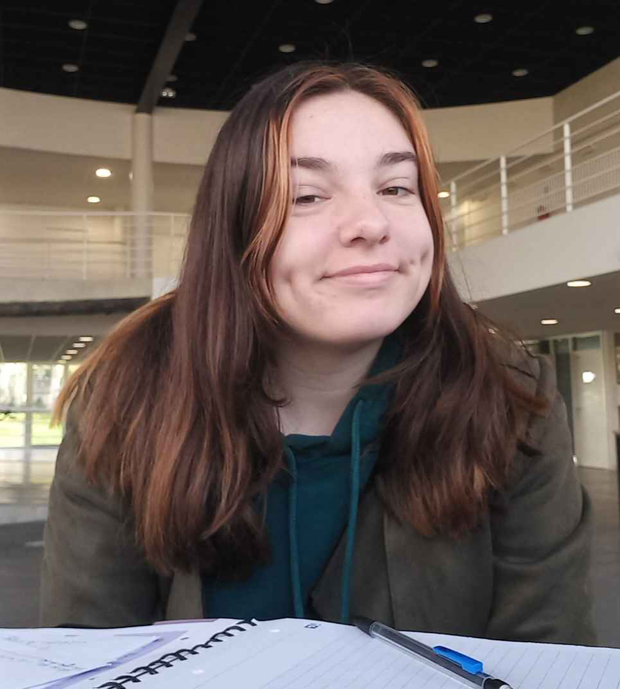

HOLLEY Sigrid
Graphiste Webdesigner

Mes Compétences
- Indesign
- Illustrator
- Photoshop
Mes Expériences Professionnelles
- Terre Azur, Noyal-sur-Vilaine (35)
- Préparatrice de commandes
Préparation de commandes alimentaires pour des professionnels.
- Enseigne Dufour, Tourlaville (50)
- Stagiaire, 6 semaines
Création de visuels sous différents formats.
- Le Collignon, Tourlaville (50)
- Employée polivalente, service de restauration.
- Leroy Merlin, Tollevast (50)
- Hotesse de caisse, Service client.
- Erasmus, Porto (Potugal)
- Stagiaire, 2 semaines
Découvertes culturelles, nouvelles techniques professionnelles et emplois de l’anglais.
- Enseigne Dufour, Tourlaville (50)
- Stagiaire, 3 semaines
Création de visuels sous différents formats
- UNIK Studio, Hérouville Saint-Clair (14)
- Stagiaire, 5 semaines
Création de visuels et de mockups pour des véhicules, initiation à la 3D (Maxon).
- MFR, Valognes (50)
- Stagiaire, 5 semaines
Création d’un catalogue, de dépliants, de fiches de renseignements.
Mon Parcours Scolaire
- Bac Professionnel Art et Métier d'Art, Option Communication Visuelle et PluriMédia
- Section Européenne, Anglais
- Lycée Paul Cornu, Lisieux (14)
- Brevet de Technicien Supérieur Etude de Réalisation de Projets de Communication
- Etude de Réalisation de Production Graphique
- Lycée Coëtlogon, Rennes (35)